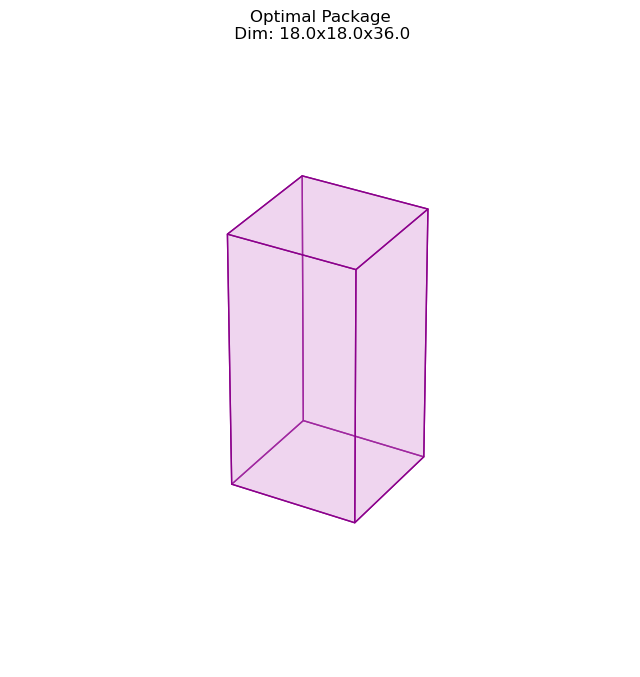

Postal Package#
import numpy as np
from scipy.optimize import minimize, NonlinearConstraint
from resources.codes_nl import Plot_Package
A postal package is a box with dimensions x, y, and z, which must meet the following requirements to be accepted at the post office. The sum of the height and the perimeter of the base cannot exceed 108 cm. The objective is to maximize the volume of the package.
1. Maximize:
The objective function has to maximize the total volume:
$\(V=x y z\)$
As scipy can only minimize, we will do:
$\(-V=-xyz\)$
# Define the objective function
def objective(x):
return -x[0]*x[1]*x[2] # maximize the volume of the package
# initial guess for dimensions
x0 = [21, 21, 21] #~108/5
ax = Plot_Package(x0)
ax.set_title('Initial Guess Package\n Dim: {0}x{1}x{2}'.format(x0[0], x0[1], x0[2]));

Define the constraints
For nonlinear constraints, the inequalities need to be given as a function
Structure: \(x = [x, y, z]\)
def constraint(x):
return 2*x[0] + 2*x[1] + x[2] # perimeter + height constraint
const = NonlinearConstraint(constraint, -np.inf, 108)
Define the bounds
# define the bounds for each dimension
bnd = ((0, np.inf), (0, np.inf), (0, np.inf))
Optimize
problem = {'fun': objective, #objective function
'x0': x0, #Initial guess
'bounds': bnd,
'constraints': [const
]
}
# Choose an optimization method
method = 'SLSQP'
result = minimize(**problem, method=method)
result
message: Optimization terminated successfully
success: True
status: 0
fun: -11664.000078554098
x: [ 1.800e+01 1.800e+01 3.600e+01]
nit: 14
jac: [-6.480e+02 -6.480e+02 -3.240e+02]
nfev: 73
njev: 10
# print the optimal solution
print("Optimal dimensions:", np.round(result.x))
print("Maximized volume:", np.round(-result.fun))
Optimal dimensions: [18. 18. 36.]
Maximized volume: 11664.0
ax = Plot_Package(result.x, figsize = [8, 15])
ax.set_title('Optimal Package\n Dim: {0}x{1}x{2}'.format(np.round(result.x)[0], np.round(result.x)[1], np.round(result.x)[2]));
